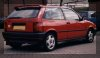
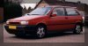
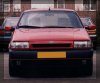

Jonny is a proud owner of a red FIAT 2000 16v TIPO 3 door registered
in November 1993 and has now covered 39,563 km. He is lucky
enough to have a FIAT garage owned by his family from where he
brought his car. Jonny would like to see more technical information
in my web site. Let's see what I can do.


